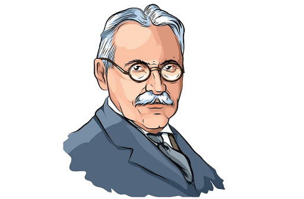

My home town is Idvor, but this fact says little because Idvor can't be found on the map.
That is a small village which is found near the main road in Banat, which belonged to Austro-Hungary, and now is an important part of Serbs"
Mihajlo Idvorski Pupin
Literary work
Besides his patents he published several dozen scientific disputes, articles,
Beside this he also published:
Title
Publisher
Place
Year
Der Osmotische Druch und seine Beziehung zur Freien Energie
Buchdruckerei von Gustav Shade
Berlin
1889
Thermodynamics of Reversible Cycles in Gases and Saturated Vapors
John Wiley & Sons
USA
1894
Serbian Orthodox Church
J. Murray
London
1918
Yugoslavia
Amer
USA
1919
The New Reformation
Scribner
New York
1927
Romance of the Machine
Scribner
New York
1930
Discussion by M. Pupin
C. A. Beard. Longmans, Green& Co
New York
1939
Clik to see some of Pupin's book's